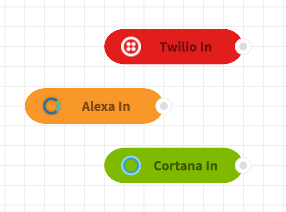
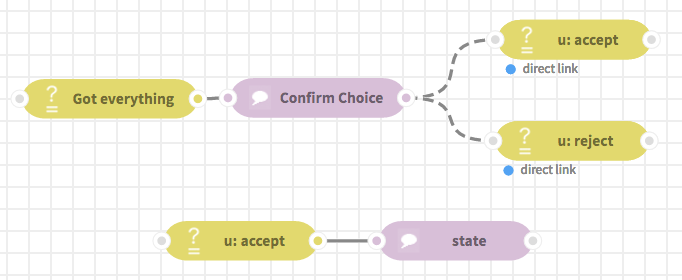

Node介绍¶
Table of Contents
ChatFlow中的节点¶
ChatFlow中的对话内容是作为网络或者 flow 中的节点来呈现的，节点可以接收数据的输 入，也可以发送数据作为输出。执行flow（运行对话）就是通过数据在网络中的节点的数据的流转 来实现的。
基础的flow，输入和输出¶
在ChatFlow的对话中，消息通常是从 输入节点 进来的，也就是node组件部分bots选项下的节点。 比如，Twilio In, Alexa In, 和Cortana In节点就可以基于用户从短信，Amazon Echo或者 微软的Cortana的输入来创建和发送消息。这些输入节点并不会从其他节点接受消息，因此他们不会接受连进来的线。
一旦一个输入节点接收了用户的输入，他就会通过他的输出的连线把数据发送出去。一个input节点
创建的消息通常会包含一个 payload 属性，里面包含了用户来自于自然语言的输入。通过连接
的线，这条消息通常会被发送到一个自然语言理解（NLU）节点上，在这里消息从自然语言转成格式化
的符号，用于驱动ChatFlow的交互。NLU的输出会被添加到输出消息的 NLU 属性上。然后这条消息
会通过连接的线发送给Router节点。
Router节点会把消息发送给网络中的Enter节点和State节点（这些节点不会通过显式的线和router节点相连）。
这个过程会生成一份系统的数据，router节点会把这些数据设置为 payload 属性，在下面的 路由节点 小节进行更详细的介绍。
最后路由节点会把消息通过连接的线路把数据发送出去，通常是发送给相连的输出节点。一般来说输入
节点和输出节点是想对应的，比如Twilio In 对应 Twilio Out, Amazon In 对应 Amazon Out。
路由节点¶
路由节点是ChatFlow最核心的部分，它的功能是在每次对话中选择系统要做出什么行为。router节点 选择的结果就是flow要进入哪个enter节点。router节点只会选择那些预设条件中满足当前对话状态 的enter节点。在这些符合要求的enter节点中，router节点会根据下面的准则选择其中一个。
- 被标记为initial state的节点将会在router节点在当前对话中收到第一条消息的时候被选择。如果有超过一个节点被标记为initial state，他们会根据其他的准则来排序。
- enter节点会根据特定的优先级来被选择。在enter节点那一小节会对enter节点的排序限制做出更明确的介绍。
- 基于
msg.NLU来设置进入条件的enter节点要比其他节点有更高的优先级，这样保证了整个系统会对用户的输入做出反应。 - 拥有更明确的条件的enter节点会更容易被选择，比如拥有相等条件的判断的节点要比那些通过大于小于，非空或者正则匹配的节点有更高的优先级。当多个判断条件同时存在的时候，明确的规则更多的节点会更优先被选择。
一旦router节点收到消息，它就会选择一个enter节点。如果没有一个是符合条件的，他机会直接把消息通过输出的线 把消息发送出去。如果一个enter节点从router节点收到了消息，它就会通过它自己的连接的线把消息发送出去。如果 消息最后被发送到了一个state节点，而且这个节点没有输出的线与它相连，那么state节点发出的消息会被发送回router 节点。换句话说，enter节点和state节点是开发者定义好的一次对话内容的起点和终点。对话内容由enter节点，state节点 和其他可用的节点来组成。比如，在这个flow里面可能有Yelp节点，这个节点封装了Yelp的开发者API，在文档后面列举的 例子中会使用到。
在每一个对话组中，系统可能会使用多个enter节点来构成一次系统的响应回复。一旦router节点收到了用户的输入，同时
通过NLU节点把这些输入转成了对应的标签，那么路由节点会更愿意选择通过 msg.NLU 来做判断的enter节点，实现
响应用户输入的目的。
router节点也会记住它在对话组中已经执行过的enter节点。因此一个enter节点在一次对话中只会被选择一次，这样就 避免了router进入无限循环。
Note
一个应用只能有一个router节点。
Enter节点¶
Enter节点是路由转入对话内容的入口，它通常是一系列网络连接的合集，每一个都由一个enter节点（入口）和state 节点（出口）作为起始和结束。在enter节点和state节点中间，可能会有其他的state节点或者其他类型的节点，比如 function节点。所有发生在接受消息的enter节点和发送消息回router的state节点的内部的交流都是通过连线进行 的，就和其他的信息的流动一样。
排序优先级¶
注意，state节点的输出可以被连到一个enter节点的输入上。一旦有这种连接被连出来了，那么连接的结果在屏幕 上看起来会是一条虚线，而不是实线。这条虚线并不代表这消息会通过这条线来传递，而是代表着选择的优先级，这样 router节点从state节点接收到消息后会更愿意去选择这样连在state节点之后的enter节点。换句话说，连在state和 enter节点之间的虚线并不是传递信息的线。这种连接我们称之为 direct link 。state节点依然会把消息发送回 router节点，然后轮流发送给enter节点。虚线意味着，一旦state节点执行完了，并把它的消息发送给了router， router将会在满足条件的enter节点中选择。
下面的照片显示了一个虚线连接的例子，state后面连接的enter节点产生的虚线表明了enter节点的优先级。
在这个例子中，在从 confirm choice 这个state节点接收到消息后，router节点将会从 U: accept 和 U: reject 两个enter节点中进行选择。比如，如果 U: accept 的判断条件符合，这个节点将会被router 节点选取。即使另外一个 U: accept 节点条件符合，而且判断条件更精确。
只接受Direct link的Enter节点¶
每一个enter节点都有一个选项框 Enter only from direct link，如果这个被选中了，那么只有对应连接的 state节点被执行了之后，这个enter节点才可以被选择，就像上面的图片中的 Confirm Choice state节点。 这对于只想在特定上下文中才让state节点生效的场景很有用。
State节点¶
state节点会更新对话的上下文，定义bot的行为，包括要和用户说什么内容。每一个state节点都包含一代码编辑器
在这里你可以添加任意的JavaScript代码。这里面的代码在任何state节点接收到消息后都会执行。整个消息对象
可以在state节点内通过 msg 对象来获取到。另外，state节点包含了一个属性可以添加系统的输出。无论state
节点什么时候收到消息，它的输出将会被添加到系统在当前对话中给用户的输出中。
对state节点两个最基本的使用是：
- 添加系统输出，定义系统输出的内容。
- 更新用户变脸。
Note
举例来说, 在我们 使用ChatFlow构建第一个bot 这一章中, msg.kitt.count 就是一个用户定义的变量，而且在state节点中被更新了。
用户变量存在于消息的 kitt 属性上，不像 msg 上的其他的属性，所有的 kitt 上的属性都会
在整个交互过程中存在。这是用户定义的变量与 msg 上其他的属性最大的不同。无论enter节点什么时候收到消息，所有的用户属性都可以在 msg.kitt 上获取到，这些属性也可以用在enter节点的判断条件上。
NLU¶
自然语言理解节点是用来将用户输入的语料转化成有限的词汇符号的。两种符号构成了NLU的输出：intents和entities。 Intents是语料的类型，它用来表示输入语料的主要意图。比如， agreeing 这个intent就表示了很多语料 的意图，比如”I agree”, “yes”, “of course”, “yes, I agree”, 或者 “I think so too”。NLU中使用 的intent词汇或者范例语料是用户自行定义的，由一系列任意数量的任意字符串组成。这些intent可以被认为是一个 桶，每一个输入的语料都会被NLU节点放到某一个里面去。
除了一个intent之外，每一个语料都可能含有0个或多个entities，这些是输入语料中的一系列的词汇，它们与 开发者定义的类型相对应。这些类型和intent一样，由任意数量的标签组成。一个普通的例子是 位置 ， 杂志名 ， 和 价格 。想象有下面一个语料：“请帮我预订下午7点在Matsuhisa的一个六人位”，这个itent可能是 预订餐厅 ， 里面的entites可能就是 人数 （对应“六”）， 餐厅名 （对应Matsuhisa）和 时间 (对应下午七点）。 需要注意的是这些匹配是在当前语料的上下文中出现的。“六”在其他语料中可能会匹配成时间，比如“我需要预订六点”。 将正确的entities和intents对应到不同的语料中是NLU的工作。
NLU节点内部的机制可能多种多样，但是每一个NLU节点必须以 msg.payload 的形式接受输入，然后将它的输出
放在 msg.NLU 属性上。NLU的输出需要包含一个 intent 属性，它包含一个对应用户输入的语料的意图，
同时需要包含一个 entities``属性，这是一个有着 ``{entity:value} 对的对象。
({"餐厅名": "Matsuhisa", "人数": "六", "时间": "下午七点"})。
如果在一个语料中出现了相同的entity的多种属性值，entity的值将会成为一个数组({"候选人": ["张三", "李四", "韩梅梅"], "位置": "245房间"})
配置NLU节点¶
为了配置NLU节点，你首先需要在ChatFlow的协作平台 NLU 上创建一个项目。当这个项目被创建好了之后，添加上
intent和entities，然后部署app，从部署信息选项卡中复制部署地址，把地址粘贴到NLU节点，然后在尾部添加上 {{{payload}}}
http://api-nlu.kitt.ai/v1/api/900584f4-7360-479c?token=xxx?q={{{payload}}}
当你用这种方法配置好之后，NLU节点会向NLU项目查询 {{{payload}}} 。它会收到 msg.NLU 对象，里面
包含了对应的 intent 和 entities。
API 节点¶
ChatFlow代理和外部的APi交互是很有用的功能。在ChatFlow里可以通过各种封装了已有的开发者APi的node来轻松 完成这件事，比如我们封装了Uber，Yelp，Movies，谷歌和亚马逊的API。这里面的可选项是无穷的。ChatFlow包含了 一系列预定义的节点，还有更多会依赖社区的需求去添加。
另外， http request 节点可以执行任意的http请求，因此和外部APi连接的可能性是无穷的。
总结¶
下面是在大部分ChatFlow的对话中会用到的基础的节点类型：
- 输入节点
- 这个节点基于外部用户的输入生成消息，通常是用户的自然语言
- 输出节点
- 这个节点将系统想要对用户发送的内容输出给用户
- Enter节点
- 这个节点根据预定义好的条件来进入不同的对话flow的 分支
- State节点
- 这个节点定义了bot做了什么，说了什么，如何更新上下文
- NLU节点
- 这个节点将用户发送的语料转边变成一系列的符号，然后被对话flow剩余的部分来使用
- 路由节点
- 这个节点用户选择在对话组中系统选择什么行为
- API节点 & HTTP Request 节点
- 这些节点和外部API进行交互，来完成bot和外部API交互的工作。
Tip
在ChatFlow里还有很多其他类型的节点！你可以打开信息面板区查看他们还是怎么工作的！